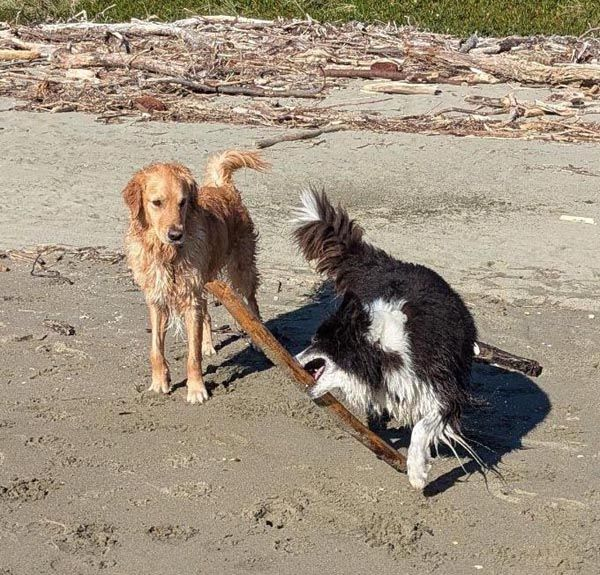
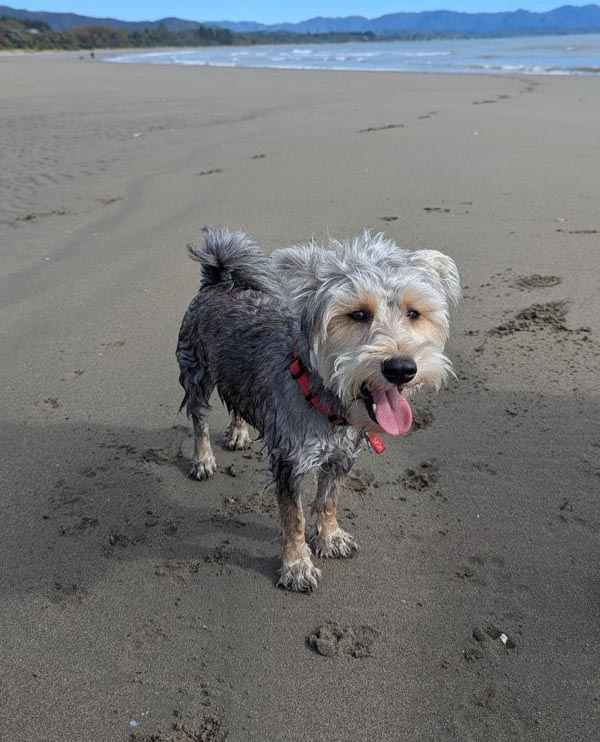
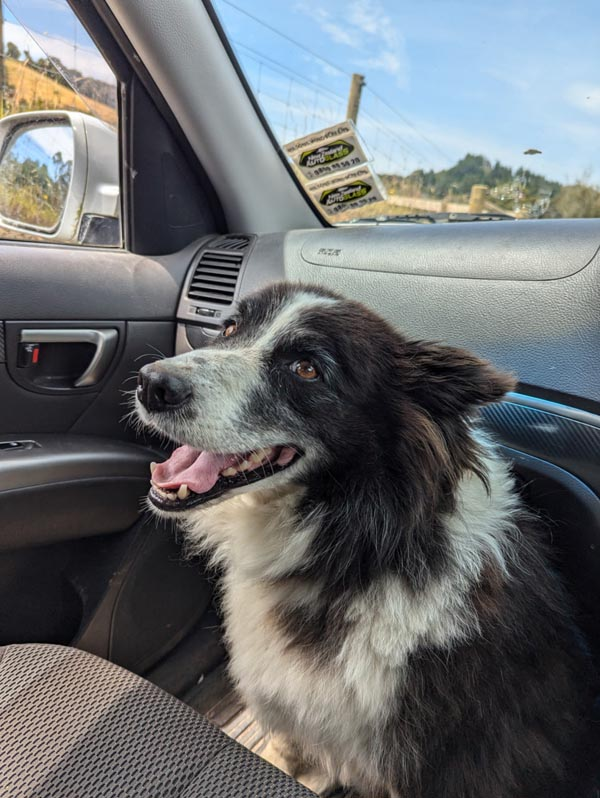
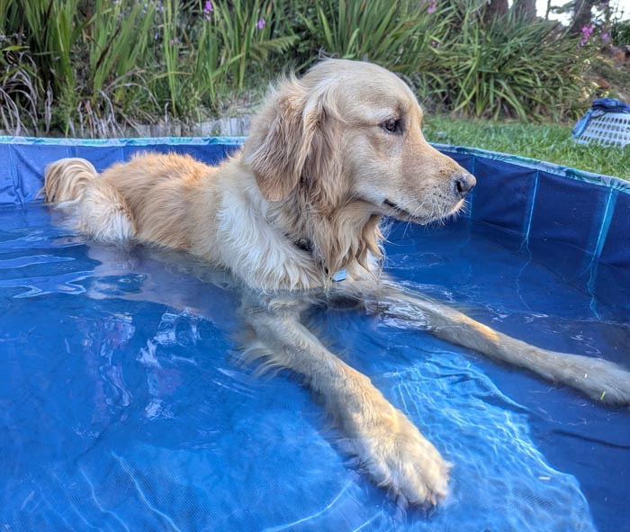
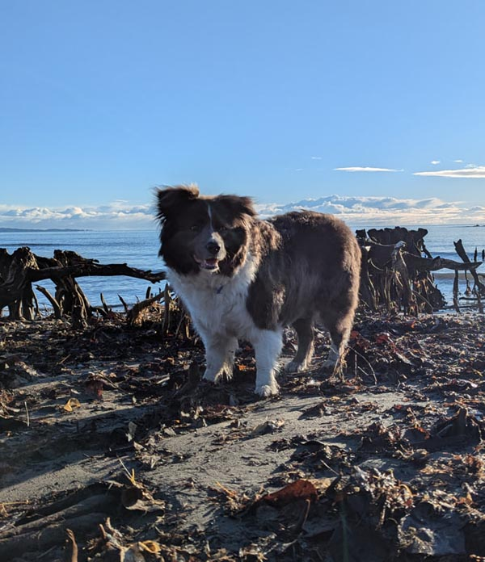
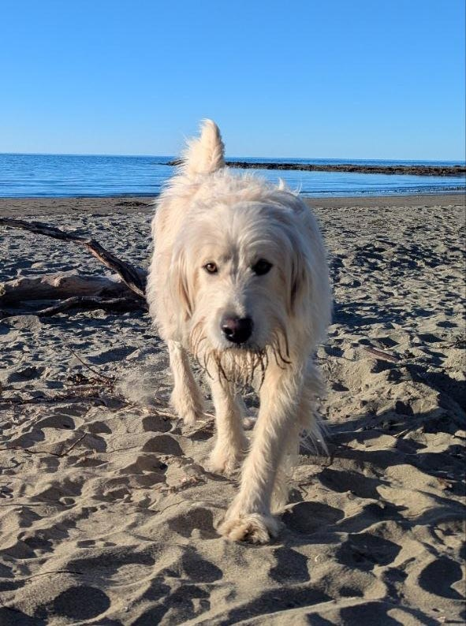
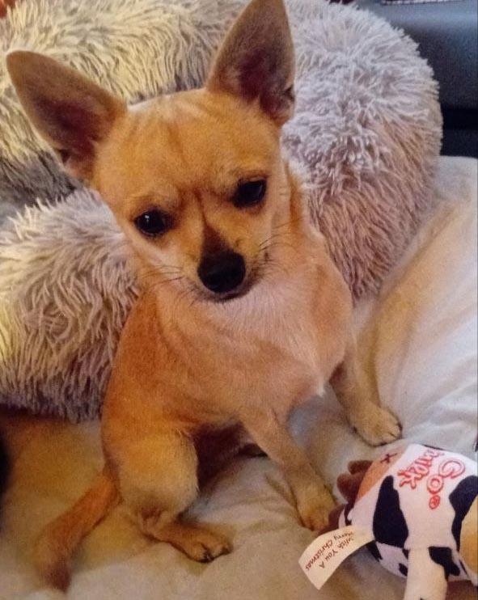
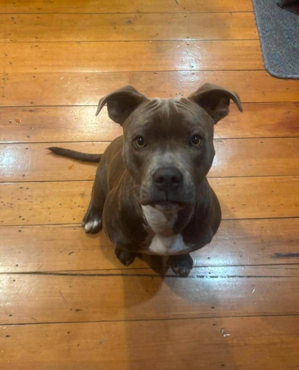
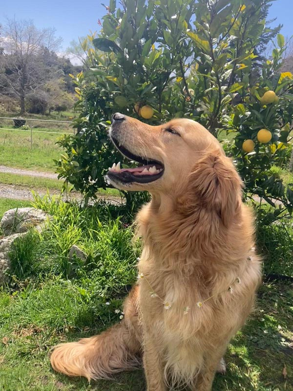
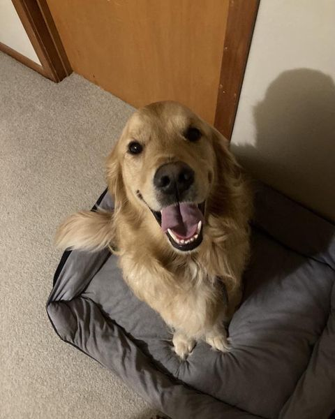

Golden Bay · Takaka · New Zealand








Effective dog training and rehabilitation — Results are quick and lasting!
With clear structure and calm standards, Warwick helps you understand how your dog thinks and how to shape their world.
Dogs are happier when they know their place — and so will you be.
The philosophy
Dogs find peace and freedom when they know their place and learn trust and obedience. Gold Standard uses the core techniques and philosophy of Beckman's dog training school — clear, structured methods that work with how dogs actually think.
Training the owner is key. Warwick coaches you through each step so you can maintain the results at home with confidence instead of second-guessing.

What's on offer
Sit, lie, fetch, wait, heel — and more. Built around your goals, with you coached through each step. With the right understanding of correction, reward, and your own energy, a dog can be shaped into almost anything you want it to be.
Lunge control, fixation interruption, safe walking without crossing in front, road awareness. The skills that matter when something unexpected happens — so your dog is one you can trust in any situation.
Structured sessions with suitable dogs to build healthy social habits and allow natural correction. A social dog is a regulated dog — one that reads other animals and responds calmly rather than reactively.
For dogs with difficult histories, high anxiety, or entrenched behaviours. Starts by meeting the dog where it is — safely and without force — and building the trust required for training to take hold.
Your energy, attention, and consistency are the most powerful training tools your dog has. Sessions include coaching you in how to hold your own — so the results don't evaporate the moment Warwick leaves.
Markets, beaches, roads, other dogs — real-world environments where the training has to hold. Practising where the triggers actually exist is what turns learned behaviour into reliable behaviour.
Not sure what is right for your dog yet? Send a quick enquiry and Warwick can guide you to the best starting point.
How it works
When a dog understands its place in the relationship, it is a safer, happier, and more relaxed dog. Gold Standard training is built around harnessing the power of a dog's pack instinct — using strong expectations and clear, consistent boundaries. Understanding dog psychology is one aspect, but shaping their place with you requires fast and firm correction from a calm place — just like dogs do with each other, which Warwick is able to provide to start the process of changing your pack. Learning and using Warwick's techniques supports your dog to know the line is real in a way they can understand and find security within, without the risk of injury.
Sessions are held in Golden Bay and are tailored to the dog and the owner. The goal is always to give you the tools to keep the training going long after the session ends.
"Both pet and owner's needs are met — and stress is reduced."
Results-focused · Individualised care · Local to Golden Bay

Get in touch
Call or text Warwick to discuss your dog and what you're hoping to achieve. First conversation is always free.
Follow on Facebook